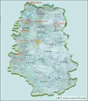

名称：
集数：
播出时间：
百家讲坛 红旗渠的故事
4
2007年05月01日
那是一段令人难以想象的岁月，那是一群令人难以忘怀的人们。上个世纪的六十年代，河南省林县的几十万百姓，为了解决困扰了他们祖祖辈辈的吃水难问题，硬是靠着一双双手，凭着自己的血肉之躯，在太行山深处的悬崖峭壁上，开凿出了一条全长1500公里的人工天河，将远在山西境内的漳河水引入了他们千百年来饱受干旱之苦的故土，这就是闻名世界人工天河“红旗渠”。这是一个为我们所熟悉的名字，这又是一段让我们感到陌生的故事。2007年五一劳动节期间，中央电视台科教频道“百家讲坛”栏目，将首次聚焦那一段激情燃烧的岁月，邀请当年红旗渠修筑者的后人，河南省林州市接待办副主任李蕾，与我们共同重温那些感人至深的故事，在这举国欢庆劳动节的日子里，为您动情讲述《红旗渠的故事》！